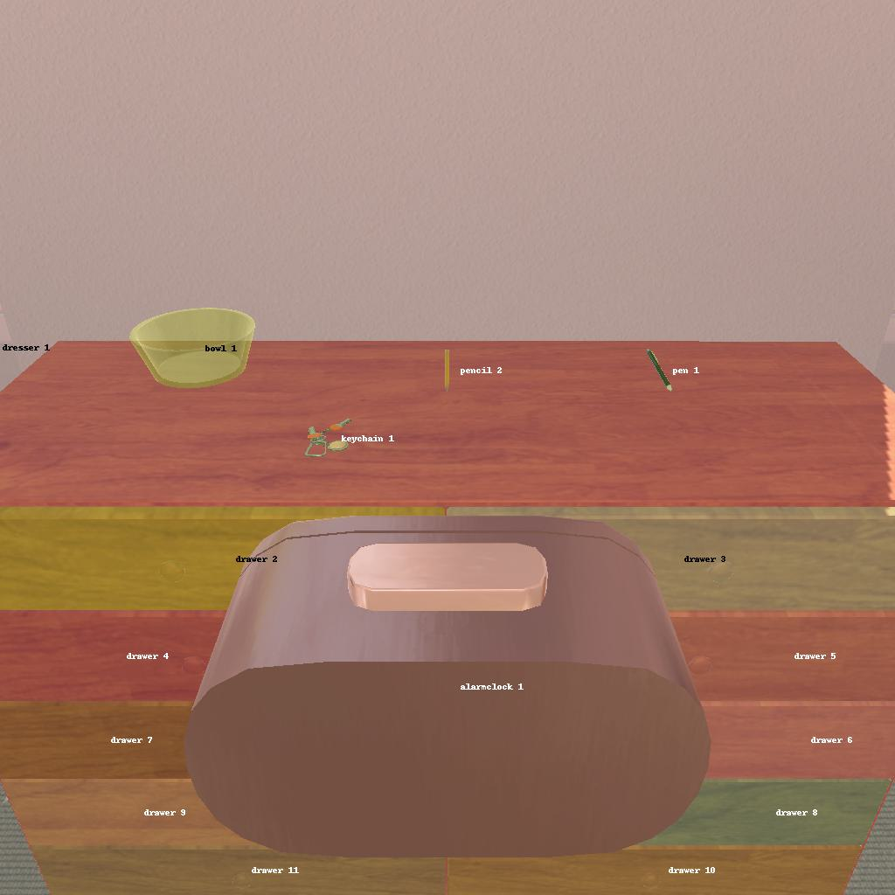
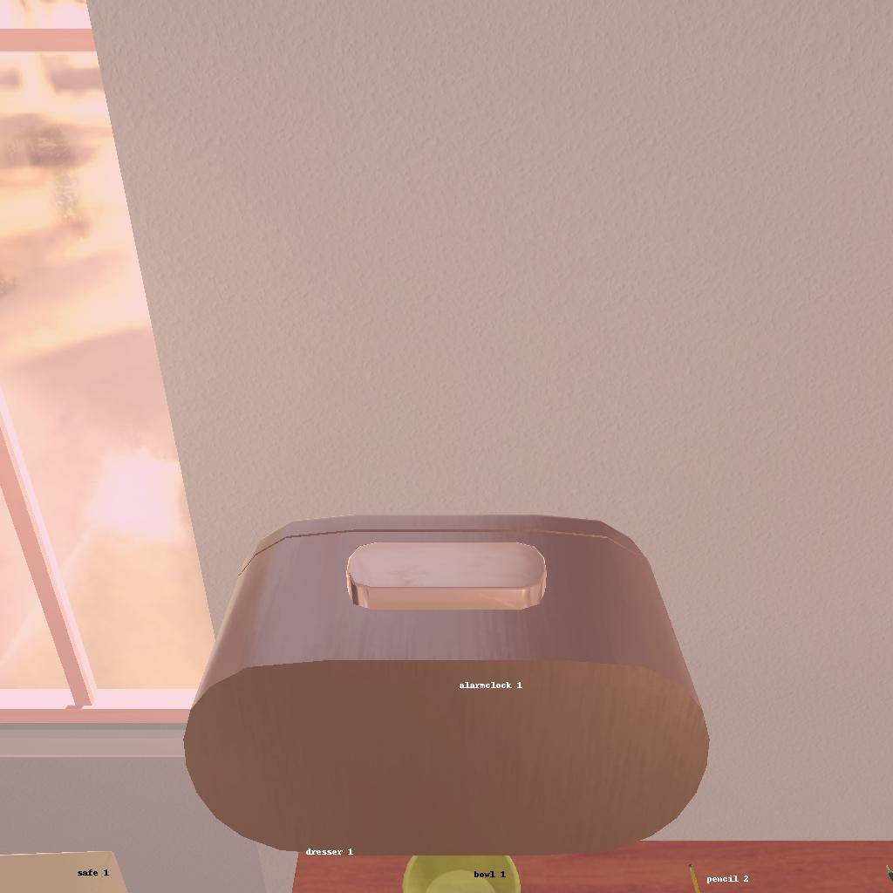

---------------------------------------------------------task: 0---------------------------------------------------------
--------------------------------------------------------------------------------------------------------------------------------------------------------------------
--------------------------------------------------------------------------------------------------------------------------------------------------------------------
Step:--------------------------------------------------------------------------12-------------------------------------------------------------------------------
----------------------------------------
VLM Prompt:
Image1:
Image2:
Image3:
**Instruction**
1. Analyze the provided image to identify all visible household objects, focusing on those relevant to the task description "examine the alarmclock with the desklamp."
2. Use the analysis of the image and the task hint "The agent must find an object of the desired type, locate and turn on a light source with the desired object in-hand." to answer the question: what is the most reasonable action in the choices for the task description "examine the alarmclock with the desklamp"?
4. Decide and write the answer using the template: The answer is: (i): , where i is the real number. If there is no desired object in the image, search every place based on **Initial Observation** to find the object. And if no one is exactly correct, choose a similar answer.
**Initial Observation**
You are in the middle of a room. Looking quickly around you, you can see bed (1), sidetable (1), drawer (1-11), dresser (1), safe (1), laundryhamper (1), garbagecan (1)
**Answer Choices**
(1): go to bed 1
(2): go to sidetable 1
(3): go to drawer 1
(4): go to drawer 3
(5): go to drawer 4
(6): go to drawer 5
(7): go to drawer 6
(8): go to drawer 7
(9): go to drawer 8
(10): go to drawer 9
(11): go to drawer 10
(12): go to drawer 11
(13): go to safe 1
(14): go to laundryhamper 1
(15): go to garbagecan 1
(16): put alarmclock 1 in/on dresser 1
(17): examine alarmclock 1
(18): examine dresser 1
**Answer**
Let's think step by step by following the instructions.
----------------------------------------
----------------------------------------
Original Response:
The task is to "examine the alarmclock with the desklamp." From the initial observation, we know there are various objects in the room, but we are interested in the alarmclock and desklamp for this task.
Analyzing the images, we can see that in Image1 and Image2, there is an alarmclock labeled as "alarmclock 1" on top of what appears to be a dresser labeled "dresser 1." We do not see a desklamp in any of the images provided. Therefore, we must search the room based on the initial observation to find the desklamp.
Since the desklamp is not visible in the images, we should look for it in the places that have not been shown in the images. The sidetable is a common place where a desklamp might be placed, but it's not explicitly mentioned in the initial observation list of visible objects, so we cannot be certain it is there.
Given the available answer choices and the lack of a desklamp in the provided images, the most reasonable action would be to search places where a desklamp might be found, such as on or near the bed, dresser, or drawers, as these are common locations for a desklamp in a bedroom.
Since the dresser is already visible with the alarm clock on it, the next reasonable place to check would be the sidetable or drawers. However, the sidetable is not listed as an option, so we must choose from the drawers.
The answer is: (4): go to drawer 3. This choice is arbitrary among the drawers since we do not have a specific indication of where the desklamp is, but it represents a reasonable action to search for the desklamp.
----------------------------------------
----------------------------------------
>>> Refine Original VLM Response and Get Pure Action: go to drawer 3
----------------------------------------
-----------------------------------------------------------------
Running time: 13.68695855140686 seconds
Total Money: 0.4376
-----------------------------------------------------------------
-----------------------------------------------------------------
Text Observation:You arrive at loc 5. The drawer 3 is closed.
-----------------------------------------------------------------
UNSUCCEED